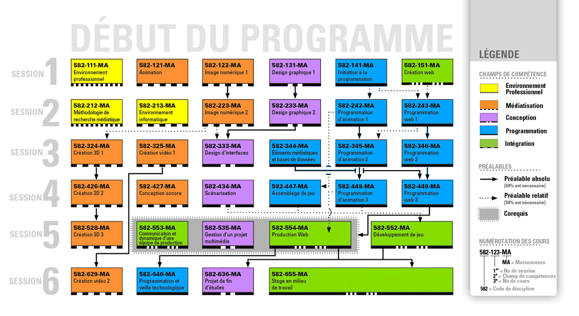

Les laboratoires du TIM offrent un milieu de travail stimulant, convivial et à la fine pointe de la technologie.
Cinq laboratoires de 25 ordinateurs sont mis à la disposition de nos étudiants pendant et à l’extérieur des heures de cours. Pour rester à la fine pointe de la technologie, chaque laboratoire est renouvelé régulièrement. Depuis quelques années, nous privilégions l’achat d’ordinateurs de type « iMac » qui assurent une plus grande polyvalence en permettant à la fois de travailler dans l’environnement Mac et Windows. Un de nos laboratoires est équipé d’ordinateurs configurés spécialement pour le développement 3D.
Des labos performants et accessibles
Des logiciels actuels
Des équipements spécialisés
Programme
Le programme Techniques d’intégration multimédia (TIM) s’adresse à vous si vous êtes passionnés des technologies!
Vous y apprendrez à exercer la profession d’intégrateurs multimédia ou Web dont le travail consiste essentiellement à concevoir, à assembler et à intégrer les différents éléments de contenu (textes, images, animations, vidéo, son) d’une application multimédia (site Web ou jeu électronique). Vous apprendrez à programmer les fonctionnalités permettant l’interactivité de cette application, en vue d’assurer son bon fonctionnement ainsi qu’une navigation efficace et conviviale.
Les champs de compétence
Les cours du programme sont subdivisés en 5 grands champs de compétences :
-
Environnement professionnel
Dans ces cours, vous développerez une vision globale du multimédia et une bonne connaissance de l’industrie, de la fonction de travail d’un intégrateur multimédia, du marché et des conditions de travail;
-
Création de contenu numérique
Dans ces cours, vous apprendrez à exploiter les fonctionnalités des principaux logiciels utilisés dans l’industrie (Photoshop, Illustrator, Flash, Maya, AfterEffect, etc.), pour modifier ou créer les médias numériques composant une application multimédia (images, son, animations 2D et 3D, vidéos, etc.) ;
-
Conception
Dans ces cours, vous apprendrez à concevoir le design des interfaces et l’interactivité d’un produit multimédia en répondant à des exigences et des normes d’utilisabilité et d’accessibilité ainsi qu’aux besoins des futurs usagers. Vous apprendrez également à formaliser les documents nécessaires à leur production (scénarimage, échéancier de production, etc.);
-
Programmation
Dans ces cours, vous apprendrez à programmer les fonctionnalités permettant l’interactivité des applications multimédias et à optimiser les composantes pour la diffusion sur différents supports (Web, supports mobiles, etc.). Vous explorerez plusieurs langages de programmation tels que : HTML, CSS, JavaScript, ActionScript, PHP, jQuery, etc.;
-
Intégration
Dans les cours d’intégration, vous apprendrez à intégrer de façon artistique et cohérente les composantes d’un projet multimédia interactif. En équipe de production, vous serez appelés à élaborer, à concevoir et à réaliser des projets multimédias dans leur globalité ainsi que les documents nécessaires à leur production.